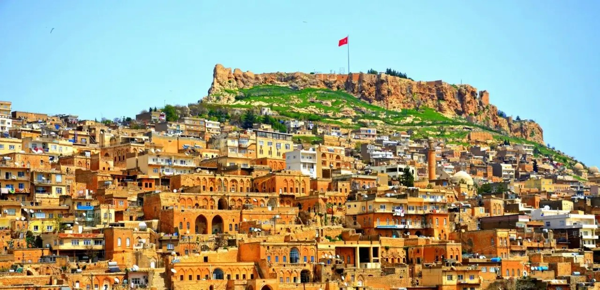
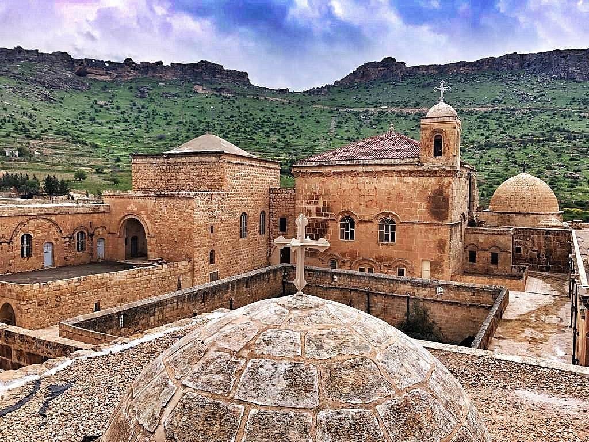
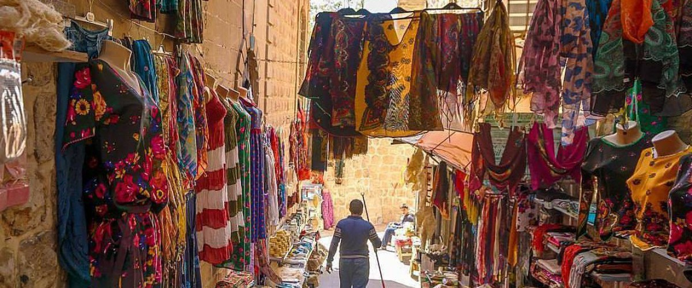
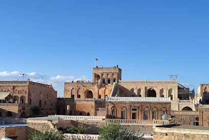
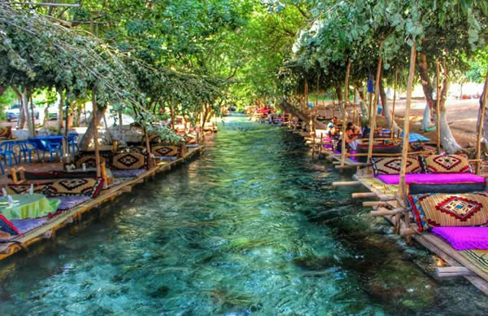
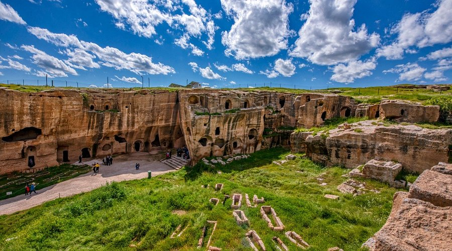
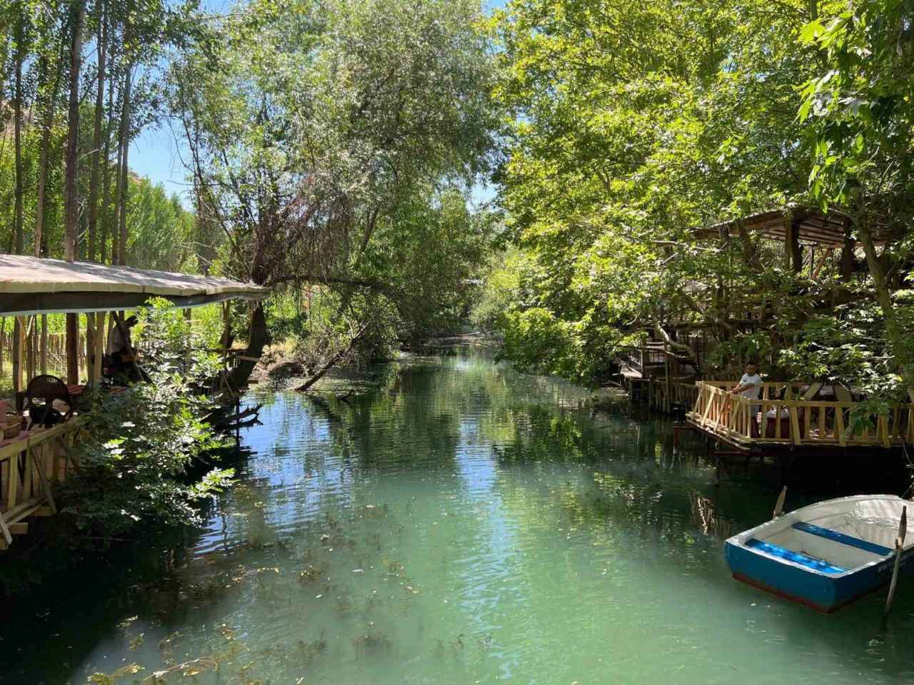

Gezilecek Yerler

Mardin Kalesi
Şehrin simgesi olan tarihi kale

Deyrulzafaran Manastırı
MS 5. yüzyıldan kalma tarihi manastır

Tarihi Çarşı
Geleneksel el sanatları ve bakır işlemeciliği

Kasımiye Medresesi
Taş işçiliğiyle bilimin buluştuğu, mimari zarafetiyle büyüleyen eğitim mirası

Midyat Konuk Evi
Geleneksel taş işçiliğiyle, tarihi dokusuyla Midyat manzarasının simgesi

Beyaz Su
Mardin'nin serin, berrak su kaynağı ve ferahlatan dinlenme noktası

Dara Antik Kenti
Mezopatomya'da binlerce yıllık tarihe ev sahipliği yapan antik yerleşim

Yeşil Su
Akarsu kenarında yeşilin her tonunda dingin bir vaha